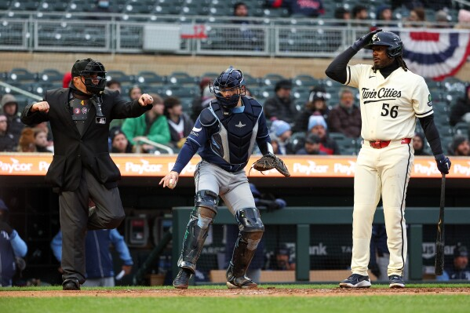
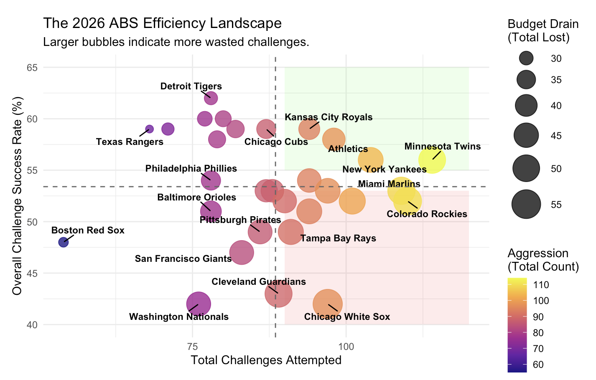
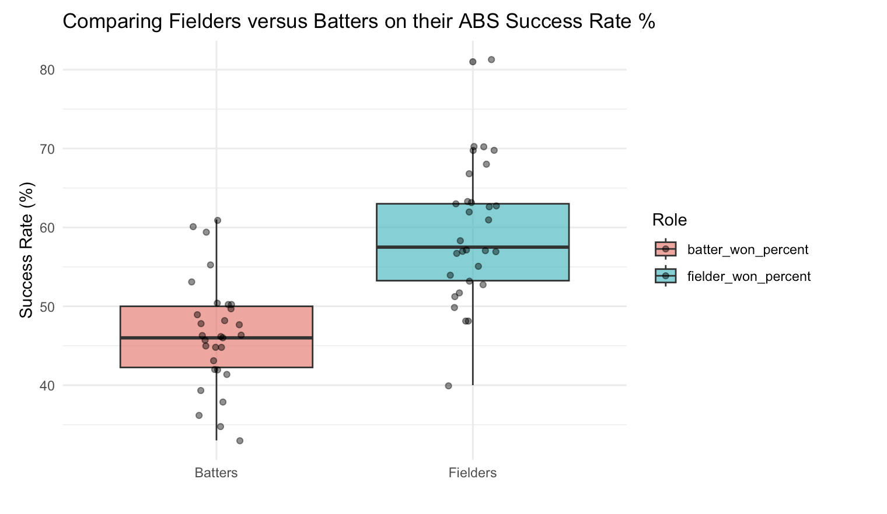
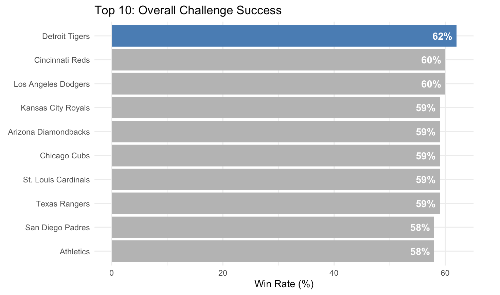
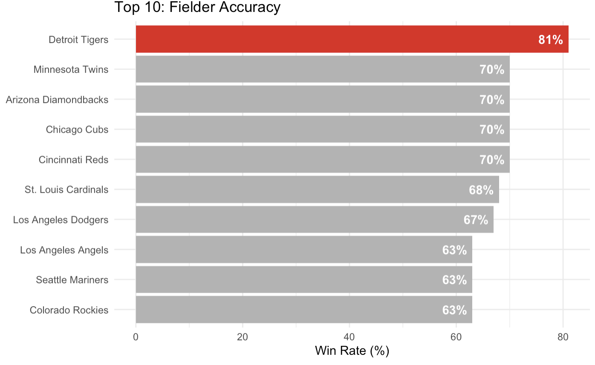

How the ABS Challenge System Punishes the Hitter's Ego
By Makena Reiss | June 11, 2026

Introduction
The beauty of baseball comes from the normalization of error. For example, a batting average of over .300 is considered amazing, yet, a .300 average means failing to get a hit 70% of the time. No other sport celebrates a 70% failure rate as elite. As baseball evolves and becomes more automated, I wonder: Are we losing the humanity in the game?
In my previous article, “Exploring the Humanity in MLB Umpiring” I explored how human umpires are influenced by crowd noise and high-pressure scenarios. That research led me to question if MLB’s Automated Ball-Strike (ABS) Challenge System was going to remove humanity from baseball. ABS is not removing humanity; it redefines it. ABS encourages discipline when challenging calls and patience when it comes to strategy.
In this article I will explore how the 30 MLB teams are currently performing with the ABS system so far in the 2026 season. I will then dive into the strategy when it comes to challenging as either a batter or fielder.
What is ABS?
MLB’s Automated Ball-Strike (ABS) Challenge System is a system allowing players to challenge the umpire’s call in real time. After a call is made, either the batter, pitcher, or catcher can tap their helmet to signal that they will be questioning the umpire’s pitch call. Each team starts with two challenges per game. If a player challenges a call and is successful, they keep their challenge, but if they are not successful, they lose it, which makes it very strategic. This system was tested in thousands of Minor League games before being implemented into the MLB regular season.
Teams’ Strategy: Accuracy or Aggression?
How have teams been doing so far in the season?

How to read this plot: On the x-axis are total challenges attempted so far in the 2026 season for each MLB team. On the y-axis is the success rate of overturning an umpire’s call. The larger the circle, the more wasted challenges. The green zone shows the higher number of challenges and the higher success rate, while the red zone shows the higher number of challenges and the lower success rate. The different quadrants of this plot reveal stories for each team.
In this case, I am using total challenges as a measurement for being more aggressive and success rate as a measurement for being more accurate.
In the high volume, low accuracy quadrant we have teams like the Rockies (110 challenges, 52% accuracy) and the White Sox (97 challenges, 42% accuracy). These teams seem to be jumping too quickly to conclusions, not using their challenges as efficiently as other teams.
The most interesting point we see is the Detroit Tigers. The Tigers are in the high success rate, low volume quadrant, meaning they have the highest success rate in the league, but also with a smaller amount of challenges. Their batters have around 48% success rate, but their fielders (pitchers and catchers) have an 81% success rate! The Tigers use their catchers to their advantage because they know they make the most accurate calls.
Fielders vs. Batters
Using the Tigers as an example, is the strategy to just let your fielders use the challenges?

I have created a side-by-side boxplot comparison, comparing the success rates of each team between batters and fielders. As you can see, the mean success rate is significantly higher when challenged by a fielder versus a batter. I ran a paired t-test to test if fielders are better than batters across the league. This test looks at the difference between the two roles within every team to see if fielders having a better success rate is not just random. I ended up getting a p-value of $4.95 \times 10^{-7}$, which makes this result statistically significant. This is evidence to claim that the perspective from behind the plate is superior to being a batter. On average, fielders are 12.87% more likely to win a challenge than their hitting counterparts. The mean success rate for batters is 46.5%, while fielders are 59.37%!
Intuitively, it makes sense that the fielders’ accuracy is statistically significant from the batters’ accuracy. Batting is emotional. A hitter sees the ball from a perpendicular angle, under extreme physical pressure, and with very few repetitions compared to a catcher. This is where humanity intersects with ABS. As a batter you have to restrain yourself from using one of the challenges if there is too much pressure or emotion. ABS is about discipline and patience, not a decision made in the heat of a moment.
Before ABS, in many games there is almost always a negative interaction between the batter and the umpire over a strike call. The batter was always on the defense, but now ABS acts as an offensive weapon. Hitters are more likely to challenge a pitch based on the feeling that they have been “wronged,” versus pitch location. On the other hand, catchers are looking at efficiency not vindication.
Conclusion
In conclusion, there are many strategies being used throughout the MLB, either being more aggressive with the calls or more patient. The most strategic teams seem to be those that can manage the human element. I have found that teams like the Tigers, Reds, and Dodgers have the highest challenge success.


What is interesting here is that the Tigers lead in total accuracy and in fielder accuracy, clearly using ABS more efficiently. Looking at the Twins, there is a different story. They are number two in fielder accuracy, but not even making the top ten for overall success because their batters’ challenge accuracy tanks their overall score.
Ultimately, I have found there is a statistically significant difference between catchers’ and batters’ accuracy, and that should be taken into consideration when creating a strategy for one’s team. The decision making should be left in the hands of the catcher, not the batter. ABS does not eliminate the humanity of the game, just redirects it into a new type of strategy of when and how to use challenges.